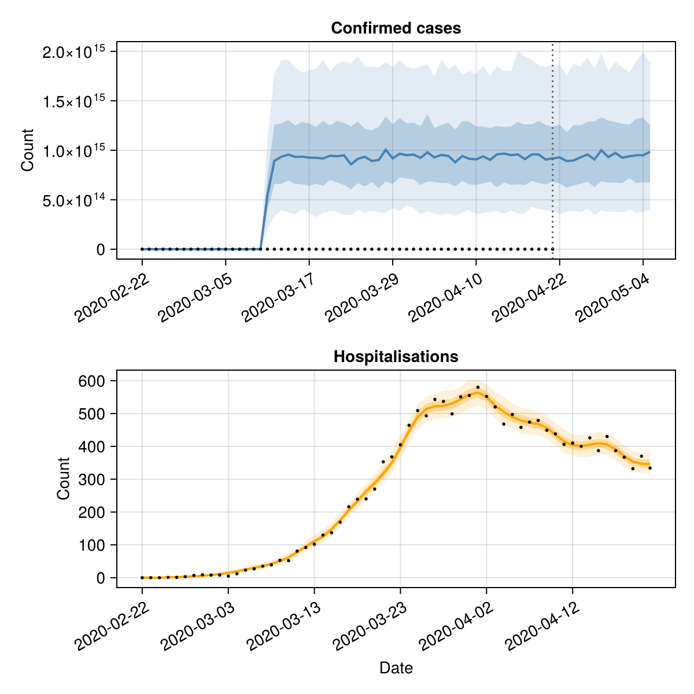

Forecasting multiple data streams
This tutorial demonstrates how to use EpiNow2.jl to forecast multiple epidemiological outcomes — for example, cases and hospitalisations — by combining estimate_infections() with estimate_secondary().
Setup
using EpiNow2
using CSV, DataFrames, Dates, Distributions, Statistics, Random
using CairoMakie
Random.seed!(6789)Data
We use the example case data and simulate a hospitalisation time series, assuming 10% of cases are hospitalised with a log-normal delay (mean ~7 days).
pkgdir = dirname(dirname(pathof(EpiNow2)))
cases_df = CSV.read(
joinpath(pkgdir, "test", "reference", "example_confirmed_full.csv"),
DataFrame
)
cases_df.date = Date.(cases_df.date)
cases_df = first(cases_df, 60)
# Simulate hospitalisations: 10% of cases with a lognormal delay
primary = DataFrame(date=cases_df.date, primary=cases_df.confirm)
hosp = simulate_secondary(
primary;
delays = delay_opts(LogNormal(1.6, 0.5)),
frac = 0.1
)
df = DataFrame(
date = cases_df.date,
cases = cases_df.confirm,
hospitalisations = hosp.secondary
)
first(df, 6)| Row | date | cases | hospitalisations |
|---|---|---|---|
| Date | Int64 | Int64 | |
| 1 | 2020-02-22 | 14 | 0 |
| 2 | 2020-02-23 | 62 | 0 |
| 3 | 2020-02-24 | 53 | 0 |
| 4 | 2020-02-25 | 97 | 1 |
| 5 | 2020-02-26 | 93 | 1 |
| 6 | 2020-02-27 | 78 | 3 |
fig = Figure(size=(600, 300))
ax = Axis(fig[1, 1]; xlabel="Date", ylabel="Count")
date_nums = Dates.value.(df.date .- df.date[1])
lines!(ax, date_nums, Float64.(df.cases); label="Cases")
lines!(ax, date_nums, Float64.(df.hospitalisations); label="Hospitalisations")
tick_step = max(1, nrow(df) ÷ 6)
ax.xticks = (date_nums[1:tick_step:end], string.(df.date[1:tick_step:end]))
ax.xticklabelrotation = π/6
axislegend(ax; position=:lt)
fig
Estimating infections
We first estimate infections and forecast cases using estimate_infections(). We use the confirmed cases and specify the generation time, incubation period, and reporting delay.
generation_time = UncertainDistribution(
(shape, rate) -> Gamma(max(1e-6, shape), max(1e-6, 1 / rate)),
[truncated(Normal(1.4, 0.48); lower=0.01),
truncated(Normal(0.38, 0.25); lower=0.01)],
14.0
)
incubation_period = UncertainDistribution(
(μ, σ) -> LogNormal(μ, σ),
[Normal(1.62, 0.064), truncated(Normal(0.418, 0.069); lower=0.01)],
14.0
)
reporting_delay = LogNormal(0.5, 0.5)
delay = incubation_period + reporting_delay
est = estimate_infections(
rename(df[!, [:date, :cases]], :cases => :confirm);
generation_time = gt_opts(generation_time),
delays = delay_opts(discretise(delay)),
forecast = forecast_opts(horizon=14),
inference = inference_opts(samples=500, warmup=250, chains=1),
verbose=false
)
estEpiNow2 estimate_infections result
Data: 60 days (2020-02-22 to 2020-04-21)
Forecast: 14 days
Timing: 1212.1s
Latest Rt: 1.06700803653e10 (90% CrI: 1.06700626081e10-1.067009424008e10)
Latest infections: 0.0 (90% CrI: 0.0-0.0)
Latest reports: 9.851623600390655e14 (90% CrI: 4.0274986104962006e14-1.8841914123508968e15)
Estimating the secondary relationship
We use estimate_secondary() to learn the delay and scaling between cases and hospitalisations.
sec_data = DataFrame(
date = df.date,
primary = df.cases,
secondary = df.hospitalisations
)
sec = estimate_secondary(
sec_data;
delays = delay_opts(LogNormal(1.6, 0.5)),
obs = obs_opts(week_effect=false),
inference = inference_opts(samples=500, warmup=250, chains=1),
burn_in=14,
verbose=false
)
secEpiNow2.EstimateSecondaryResult(EpiNow2.EpiNow2Fit{EpiNow2.SecondaryMetadata, @NamedTuple{expected::Vector{Float64}}}(MCMC chain (500×16×1 Array{Float64, 3}), [(expected = [0.00011609630737430497, 0.016651029921410224, 0.1808794577871001, 0.7620160242212167, 1.7386725309283435, 3.016171711811172, 4.427374491722064, 5.8113389786889265, 7.9416489380340485, 11.025683465256115 … 401.13737099822254, 398.4988032055957, 402.8064560724115, 408.3072047089101, 404.4603851792563, 388.9338840904737, 367.7310600423319, 352.32538745952866, 346.62712792960366, 345.27278057476],), (expected = [0.00011696101813507927, 0.0167761204683505, 0.1822383853878972, 0.7677409914799221, 1.7517350523640338, 3.0388319980560956, 4.4606370488587475, 5.85499916726758, 8.001314001031822, 11.108518670746955 … 404.1510888863049, 401.49269771258656, 405.83271368359385, 411.37478907198226, 407.4990686477824, 391.85591800807214, 370.4937985791186, 354.9723842217681, 349.23131405399033, 347.8667915792123],), (expected = [0.00011623992607951888, 0.0166718060504941, 0.181105160335697, 0.7629668767170861, 1.74084206842056, 3.0199353297952465, 4.432899027329551, 5.818590443615126, 7.951558632099349, 11.039441458678182 … 401.6379155509224, 398.99605531826285, 403.30908333169583, 408.816695875603, 404.96507623330746, 389.4192009696818, 368.18991975531, 352.7650237690824, 347.05965387502556, 345.70361654751554],), (expected = [0.00011660613734094092, 0.016724782801871577, 0.18168067600341406, 0.7653914417583872, 1.746374140726487, 3.029532124916088, 4.446985960856596, 5.837080849261281, 7.976827217821211, 11.074522767329636 … 402.91424687398415, 400.2639912960548, 404.5907253181872, 410.1158400404257, 406.25198066025695, 390.65670346811675, 369.3599595078279, 353.8860460429487, 348.16254553412267, 346.802198969726],), (expected = [0.0001164291355720611, 0.01669917742134093, 0.18140251063294344, 0.7642195709114666, 1.7437003109269391, 3.024893682872088, 4.4401772894282585, 5.828143837073379, 7.964614091571368, 11.057566834129176 … 402.2973545889641, 399.65115675343577, 403.971266217452, 409.48792156978493, 405.62997805153094, 390.0585784121978, 368.79444138298607, 353.3442196538378, 347.62948225861066, 346.2712184880323],), (expected = [0.00011617170561534622, 0.016661937160730042, 0.18099794914334363, 0.7625152113262074, 1.7398115142560548, 3.0181475698689915, 4.430274812169557, 5.815145918039852, 7.946851418453767, 11.03290626052318 … 401.4001513845248, 398.75985509708374, 403.07032985677, 408.574681969184, 404.7253424331741, 389.1886701156326, 367.97195634613666, 352.55619168791134, 346.85419929500125, 345.49896472309],), (expected = [0.00011558295559748048, 0.016576767569825478, 0.1800727049049915, 0.7586172899301264, 1.7309177198481447, 3.002719007467854, 4.40762755022159, 5.78541928808247, 7.906227653260368, 10.976506790405596 … 399.3482207957786, 396.7214215254921, 401.00986142793425, 406.4860756623233, 402.6564136912892, 387.19916379834115, 366.0909084435581, 350.75394813809874, 345.0811039470427, 343.73279724317155],), (expected = [0.00011785755910354029, 0.016905815627918916, 0.18364733543518935, 0.7736766961378949, 1.7652784083042443, 3.062326414798909, 4.495124008593245, 5.900266497717411, 8.063175349114749, 11.19440305974996 … 407.27574244286546, 404.59679818470744, 408.9703685534285, 414.5552919412212, 410.64960677370954, 394.88551268550407, 373.35823417508294, 357.7168175610809, 351.9313608857421, 350.55628874245724],), (expected = [0.00011614299381952407, 0.016657783662929443, 0.180952827406017, 0.7623251199124342, 1.7393777872048868, 3.017395159304153, 4.4291703645411085, 5.813696228181818, 7.944870303861213, 11.030155806134466 … 401.3000841058538, 398.6604460325769, 402.9698462100071, 408.47282611183255, 404.62444619911037, 389.0916471051263, 367.88022256835046, 352.4683009919389, 346.7677300804635, 345.41283336252565],), (expected = [0.00011614134936300277, 0.016657545773018735, 0.180950243076717, 0.762314232503407, 1.7393529456630283, 3.017352065292629, 4.429107107748803, 5.813613197780108, 7.9447568363222505, 11.029998274969087 … 401.29435279284246, 398.6547524185159, 402.96409104968126, 408.46699235869875, 404.6186674080132, 389.0860901513456, 367.8749685532396, 352.46326708778855, 346.76277759108876, 345.40790022360073],) … (expected = [0.00011714496784622008, 0.016802730950166992, 0.1825274697279649, 0.7689588623811543, 1.7545138393918651, 3.043652515272036, 4.467712984598946, 5.864286988631344, 8.014006535462423, 11.126140183989934 … 404.79219636422766, 402.1295881674409, 406.47648873378074, 412.0273555521103, 408.1454870475987, 392.47752157711375, 371.08151528030146, 355.5354792032261, 349.785301938805, 348.4186149132226],), (expected = [0.00011741579631258975, 0.016841909462245227, 0.18295308751223038, 0.7707519291186415, 1.7586050370591422, 3.05074974459958, 4.478130858118635, 5.877961413017573, 8.032693706063915, 11.152084271518593 … 405.73609648751193, 403.06727958355657, 407.42431631365514, 412.9881267211498, 409.0972064211693, 393.39270616886637, 371.9468083642319, 356.36452182200975, 350.6009362135274, 349.23106232795453],), (expected = [0.00011767591854232902, 0.0168795391917056, 0.18336188001674028, 0.7724741133634465, 1.7625345038311597, 3.0575664103009315, 4.488136898197836, 5.891095267849849, 8.050642146084042, 11.177002752160481 … 406.6426828889015, 403.96790271685177, 408.33467491365826, 413.91091723172605, 410.0113029666975, 394.27171220475617, 372.7778951749615, 357.16079120032754, 351.384327298802, 350.01139253437157],), (expected = [0.00011758302987315579, 0.016866101756948765, 0.18321590175202226, 0.771859127851707, 1.7611313060368805, 3.055132204636033, 4.484563778947003, 5.886405217723385, 8.044232825708477, 11.168104456513221 … 406.3189442972401, 403.6462935857816, 408.00958928407, 413.58139221366434, 409.6848825308314, 393.95782245780595, 372.48111720295407, 356.8764464023859, 351.1045812908338, 349.7327395547226],), (expected = [0.00011547789751637747, 0.016561569686993648, 0.17990760192192023, 0.7579217347203838, 1.729330688092958, 2.9999658947530254, 4.403586314025766, 5.78011479108678, 7.898978643173083, 10.966442722590772 … 398.98206897638397, 396.35767814886566, 400.6421860941966, 406.11337933260813, 402.2872286773351, 386.84415112794716, 365.7552493741553, 350.4323511219152, 344.7647082116431, 343.417637734524],), (expected = [0.00011585807330522998, 0.0166165665709441, 0.18050506340391204, 0.7604387543325649, 1.735073711791159, 3.009928639048092, 4.4182104166417275, 5.799310280939913, 7.925210781618777, 11.002861766993593 … 400.3070699217341, 397.6739636139814, 401.9727002115089, 407.4620630289441, 403.6232059047787, 388.12884261100686, 366.9699055924677, 351.59612070571603, 345.90965581617024, 344.5581117804658],), (expected = [0.00011595821637156145, 0.016631053439279658, 0.18066244224437475, 0.7611017688363056, 1.7365864961925226, 3.01255295072716, 4.422062588508666, 5.804366613483944, 7.932120655570281, 11.012454999614661 … 400.65609177281004, 398.0206896983597, 402.32317430115864, 407.81732321337097, 403.975119046089, 388.4672464446435, 367.2898612598382, 351.90267219595404, 346.21124936123107, 344.85852693414205],), (expected = [0.0001156902451433332, 0.016592288260188662, 0.18024131472430924, 0.759327618938474, 1.7325384606277225, 3.005530597111925, 4.411754623470799, 5.79083645416498, 7.913630634468295, 10.986784622000718 … 399.72214978823285, 397.09289091914036, 401.38534629462697, 406.86668817243526, 403.03344030425336, 387.56171704297117, 366.43369701098175, 351.082375970129, 345.40422002154514, 344.05465083309963],), (expected = [0.00011685975288497764, 0.016761471262979315, 0.18207924299068506, 0.7670705473642997, 1.7502053159942, 3.0361782788495577, 4.456741710301321, 5.849886174442161, 7.994326696373569, 11.098817938222545 … 403.798155964088, 401.1420862829833, 405.47831224929917, 411.01554791086113, 407.1432120360936, 391.5137220867377, 370.1702575506219, 354.66239757501194, 348.92634091018317, 347.5630100316147],), (expected = [0.0001164078905787163, 0.016696104084038103, 0.18136912327482943, 0.7640789147558736, 1.7433793791269014, 3.024336944535637, 4.4393600649445855, 5.827071154208933, 7.9631481865268094, 11.055531664140325 … 402.22331085159, 399.5776000547552, 403.8969143928585, 409.41255439230275, 405.5553209372746, 389.9867872492464, 368.72656393252504, 353.2791858516136, 347.5655002667229, 346.2074864876618],)], EpiNow2.SecondaryMetadata([Dates.Date("2020-02-22"), Dates.Date("2020-02-23"), Dates.Date("2020-02-24"), Dates.Date("2020-02-25"), Dates.Date("2020-02-26"), Dates.Date("2020-02-27"), Dates.Date("2020-02-28"), Dates.Date("2020-02-29"), Dates.Date("2020-03-01"), Dates.Date("2020-03-02") … Dates.Date("2020-04-12"), Dates.Date("2020-04-13"), Dates.Date("2020-04-14"), Dates.Date("2020-04-15"), Dates.Date("2020-04-16"), Dates.Date("2020-04-17"), Dates.Date("2020-04-18"), Dates.Date("2020-04-19"), Dates.Date("2020-04-20"), Dates.Date("2020-04-21")], 14)), EpiNow2.EstimateSecondaryArgs(EpiNow2.SecondaryOpts(incidence, false, true, true, false, false), EpiNow2.DelayOpts(Distributions.LogNormal{Float64}(μ=1.6, σ=0.5), true), EpiNow2.ObsOpts{Float64}(negbin, Distributions.Normal{Float64}(μ=0.0, σ=0.25), 1.0, false, 7, 1.0, true), EpiNow2.InferenceOpts(nuts, 500, 250, 1, nothing, 0.9, 12, true, AutoForwardDiff()), 14, [0.2, 0.5, 0.9]), EpiNow2.SecondaryData([Dates.Date("2020-02-22"), Dates.Date("2020-02-23"), Dates.Date("2020-02-24"), Dates.Date("2020-02-25"), Dates.Date("2020-02-26"), Dates.Date("2020-02-27"), Dates.Date("2020-02-28"), Dates.Date("2020-02-29"), Dates.Date("2020-03-01"), Dates.Date("2020-03-02") … Dates.Date("2020-04-12"), Dates.Date("2020-04-13"), Dates.Date("2020-04-14"), Dates.Date("2020-04-15"), Dates.Date("2020-04-16"), Dates.Date("2020-04-17"), Dates.Date("2020-04-18"), Dates.Date("2020-04-19"), Dates.Date("2020-04-20"), Dates.Date("2020-04-21")], [14, 62, 53, 97, 93, 78, 250, 238, 240, 561 … 4694, 4092, 3153, 2972, 2667, 3786, 3493, 3491, 3047, 2256], [0, 0, 0, 1, 1, 3, 7, 9, 8, 8 … 410, 400, 426, 387, 430, 387, 367, 332, 370, 334]), 60×10 DataFrame
Row │ date mean median sd lower_20 upper_20 lower_50 ⋯
│ Date Float64 Float64 Float64 Float64 Float64 Float64 ⋯
─────┼──────────────────────────────────────────────────────────────────────────
1 │ 2020-02-22 0.0 0.0 0.0 0.0 0.0 0.0 ⋯
2 │ 2020-02-23 0.012 0.0 0.108994 0.0 0.0 0.0
3 │ 2020-02-24 0.146 0.0 0.375454 0.0 0.0 0.0
4 │ 2020-02-25 0.76 1.0 0.894427 0.0 1.0 0.0
5 │ 2020-02-26 1.83 2.0 1.4329 1.0 2.0 1.0 ⋯
6 │ 2020-02-27 3.072 3.0 1.83345 2.6 3.0 2.0
7 │ 2020-02-28 4.49 4.0 2.08196 4.0 5.0 3.0
8 │ 2020-02-29 5.968 6.0 2.45663 5.0 6.0 4.0
⋮ │ ⋮ ⋮ ⋮ ⋮ ⋮ ⋮ ⋮ ⋱
54 │ 2020-04-15 410.214 410.0 19.8645 405.0 415.0 398.0 ⋯
55 │ 2020-04-16 406.226 406.0 21.4332 400.0 412.0 391.0
56 │ 2020-04-17 391.01 391.0 20.4986 386.0 396.0 377.0
57 │ 2020-04-18 369.672 370.0 20.3396 364.0 375.4 356.0
58 │ 2020-04-19 353.226 353.5 18.9654 348.0 358.0 340.0 ⋯
59 │ 2020-04-20 348.134 347.0 18.7726 343.0 352.4 335.0
60 │ 2020-04-21 346.988 346.0 19.9891 341.0 351.0 333.0
3 columns and 45 rows omitted, 60×10 DataFrame
Row │ date mean median sd lower_20 u ⋯
│ Date Float64 Float64 Float64 Float64 F ⋯
─────┼──────────────────────────────────────────────────────────────────────────
1 │ 2020-02-22 0.000116666 0.000116626 9.68797e-7 0.000116368 ⋯
2 │ 2020-02-23 0.0167334 0.0167277 0.000140148 0.0166903
3 │ 2020-02-24 0.181775 0.181712 0.0015225 0.181306
4 │ 2020-02-25 0.765787 0.765523 0.00641409 0.763813
5 │ 2020-02-26 1.74728 1.74667 0.0146349 1.74277 ⋯
6 │ 2020-02-27 3.0311 3.03005 0.0253879 3.02329
7 │ 2020-02-28 4.44928 4.44775 0.0372664 4.43782
8 │ 2020-02-29 5.8401 5.83809 0.0489156 5.82505
⋮ │ ⋮ ⋮ ⋮ ⋮ ⋮ ⋱
54 │ 2020-04-15 410.328 410.186 3.43683 409.27 4 ⋯
55 │ 2020-04-16 406.462 406.322 3.40446 405.414 4
56 │ 2020-04-17 390.858 390.724 3.27376 389.851 3
57 │ 2020-04-18 369.551 369.424 3.09529 368.598 3
58 │ 2020-04-19 354.069 353.947 2.96562 353.156 3 ⋯
59 │ 2020-04-20 348.342 348.222 2.91766 347.445 3
60 │ 2020-04-21 346.981 346.862 2.90626 346.087 3
5 columns and 45 rows omitted, 6.363364934921265)Visualising results
We combine the case forecast from estimate_infections() with the fitted secondary relationship to show both data streams.
fig = Figure(size=(600, 600))
# Cases panel
ax1 = Axis(fig[1, 1]; title="Confirmed cases", ylabel="Count",
xticklabelrotation=π/6)
date_nums_r = Dates.value.(est.reports.date .- est.reports.date[1])
band!(ax1, date_nums_r, est.reports.lower_90, est.reports.upper_90;
color=(:steelblue, 0.15))
band!(ax1, date_nums_r, est.reports.lower_50, est.reports.upper_50;
color=(:steelblue, 0.3))
lines!(ax1, date_nums_r, est.reports.median; color=:steelblue, linewidth=2)
obs_nums = Dates.value.(df.date .- est.reports.date[1])
scatter!(ax1, obs_nums, Float64.(df.cases); color=:black, markersize=4)
fd = Dates.value(df.date[end] - est.reports.date[1])
vlines!(ax1, [fd]; color=:grey40, linestyle=:dot)
tick_idx = 1:max(1, length(date_nums_r) ÷ 6):length(date_nums_r)
ax1.xticks = (date_nums_r[tick_idx], string.(est.reports.date[tick_idx]))
# Hospitalisations panel
ax2 = Axis(fig[2, 1]; title="Hospitalisations", xlabel="Date", ylabel="Count",
xticklabelrotation=π/6)
date_nums_s = Dates.value.(sec.predictions.date .- sec.predictions.date[1])
band!(ax2, date_nums_s, sec.predictions.lower_90, sec.predictions.upper_90;
color=(:orange, 0.15))
band!(ax2, date_nums_s, sec.predictions.lower_50, sec.predictions.upper_50;
color=(:orange, 0.3))
lines!(ax2, date_nums_s, sec.predictions.median; color=:orange, linewidth=2)
obs_nums_s = Dates.value.(df.date .- sec.predictions.date[1])
scatter!(ax2, obs_nums_s, Float64.(df.hospitalisations); color=:black, markersize=4)
tick_idx2 = 1:max(1, length(date_nums_s) ÷ 6):length(date_nums_s)
ax2.xticks = (date_nums_s[tick_idx2], string.(sec.predictions.date[tick_idx2]))
fig
Fitted parameters
The fraction of cases that become hospitalisations and the delay parameters:
params = get_parameters(sec)
param_summary = DataFrame(
parameter = Symbol[], median = Float64[],
lower_90 = Float64[], upper_90 = Float64[]
)
for (k, v) in sort(collect(params), by=first)
any(ismissing, v) && continue
push!(param_summary, (
parameter=k, median=round(median(v), digits=4),
lower_90=round(quantile(v, 0.05), digits=4),
upper_90=round(quantile(v, 0.95), digits=4)
))
end
param_summary| Row | parameter | median | lower_90 | upper_90 |
|---|---|---|---|---|
| Symbol | Float64 | Float64 | Float64 | |
| 1 | acceptance_rate | 0.9817 | 0.8316 | 1.0 |
| 2 | frac | 0.1005 | 0.0992 | 0.102 |
| 3 | hamiltonian_energy | 199.235 | 197.635 | 203.361 |
| 4 | hamiltonian_energy_error | 0.0014 | -0.1462 | 0.1658 |
| 5 | is_accept | 1.0 | 1.0 | 1.0 |
| 6 | log_density | -198.121 | -201.37 | -197.265 |
| 7 | logjoint | -190.722 | -192.946 | -190.031 |
| 8 | loglikelihood | -188.71 | -190.956 | -188.028 |
| 9 | logprior | -2.0085 | -2.0561 | -1.9584 |
| 10 | max_hamiltonian_energy_error | 0.0261 | -0.2648 | 0.5113 |
| 11 | n_steps | 7.0 | 3.0 | 7.0 |
| 12 | nom_step_size | 0.4496 | 0.4496 | 0.4496 |
| 13 | numerical_error | 0.0 | 0.0 | 0.0 |
| 14 | overdispersion | 0.0082 | 0.0003 | 0.0269 |
| 15 | step_size | 0.4496 | 0.4496 | 0.4496 |
| 16 | tree_depth | 3.0 | 1.0 | 3.0 |